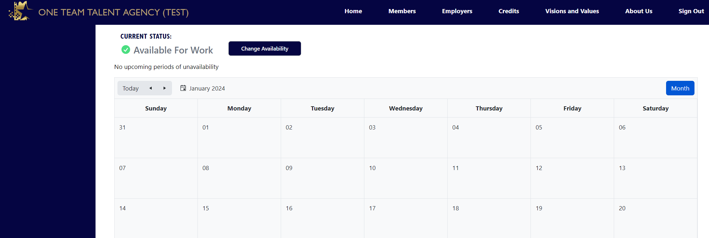
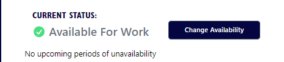
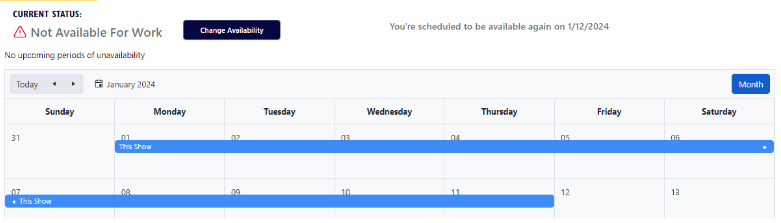
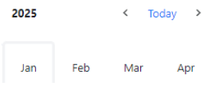

USING YOUR DASHBOARD CALENDAR



The calendar on your dashboard is used by the OTTA system to include or exclude your resume in job request results based on your availability date.
You can quickly see that you are available by looking at the Current Status.

To change your Current Status, click the Change Availability button.
This screen will appear:
If you are working on a show and are not available until the show's estimated end date, add the show name, show start date, and show estimated stop date. Then click Submit.
You will notice that your Current Status changed, and the calendar shows the days that you are not available for work.

Our demonstration shows a very short time frame but you can select a different month for the end date by clicking the date icon.
Then click on the month in the pop-out window to select a different month.
If you click the arrow on the side of Today, you can advance, or decrease the year.

Clicking the arrows on the main calendar will advance or decrease the month displayed.
To change an existing unavailable status, you must delete the blue bar on the main calendar. To do this, hover your mouse over the blue bar and click on the x at the left of the bar. Deleting the blue bar immediately changes your Current Status to Available For Work.
You can block out future dates if needed. This will exclude your resume from being included in any job request results for that time frame.
Please pay close attention to this calendar. It is important that you keep this calendar current with your true availability date.